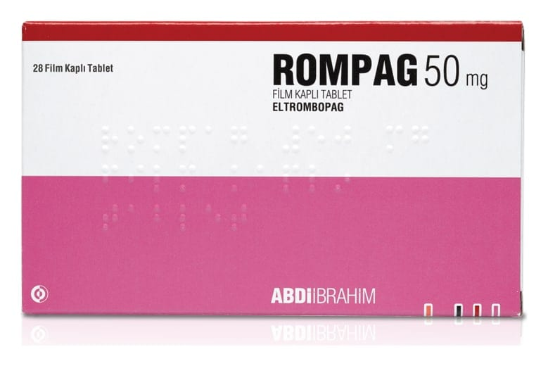

Rompag 50 mg Film Kaplı Tablet, 28 Adet

Ne için kullanılır
KT · Bölüm 1ROMPAG etkin madde olarak eltrombopag içerir. ROMPAG trombopoietin reseptör agonistleri adı verilen bir ilaç grubuna aittir. ROMPAG, kanınızdaki pıhtılaşmayı sağlayan kan hücresi (trombosit/kan pulcuğu) sayısının artırılmasına yardımcı olmak için kullanılır. Trombositler (kan pulcuğu) kanamanın azaltılması veya önlenmesine yardımcı olan kan hücreleridir. ROMPAG, 14 ve 28 film kaplı tablet içeren ambalajlarda bulunmaktadır. ROMPAG 50 mg Film Kaplı Tablet; kahverengi, bir yüzü “E2” baskılı diğer yüzü baskısız, yuvarlak, bikonveks film kaplı tablettir.
Bu ilacı kullanmaya başlamadan önce bu KULLANMA TALİMATINI dikkatlice okuyunuz, çünkü sizin için önemli bilgiler içermektedir.
• Bu kullanma talimatını saklayınız. Daha sonra tekrar okumaya ihtiyaç duyabilirsiniz. • Eğer ilave sorularınız olursa, lütfen doktorunuza veya eczacınıza danışınız. • Bu ilaç kişisel olarak sizin için reçete edilmiştir, başkalarına vermeyiniz. • Bu ilacın kullanımı sırasında, doktora veya hastaneye gittiğinizde doktorunuza bu ilacı kullandığınızı söyleyiniz. • Bu talimatta yazılanlara aynen uyunuz. İlaç hakkında size önerilen dozun dışında yüksek veya düşük doz kullanmayınız.
ROMPAG, kronik idiyopatik trombositopenik purpura (ITP) olan 1 yaş ve üzeri kortizon (steroid) tedavisi ve bağışıklık sistemini baskılayan (immünsüpresif) tedavilere dirençli hastaların kanama bozukluğunun tedavisinde kullanılır. ITP’ye düşük kan trombosit sayısı (trombositopeni) neden olur. ITP hastalarında kanama riski yüksektir ve peteşi (deri altında iğne ucu büyüklüğünde düz yuvarlak kırmızı lekeler), çürüme, burun kanamaları, diş eti kanamaları ve kesik veya yaralanma meydana geldiğinde kanamanın kontrol edilememesi gibi belirtiler görülebilir. ROMPAG, hepatit C virüsü (HCV) enfeksiyonu olan yetişkinlerde, interferon tedavisi sırasında yan etkilerle ilgili sorunlar yaşamışlarsa, düşük trombosit sayısını (trombositopeni) tedavi etmek için de kullanılabilir. Hepatit C'li birçok insanda, yalnızca hastalığın bir sonucu olarak değil, aynı zamanda onu tedavi etmek için kullanılan bazı antiviral ilaçlar nedeniyle de düşük trombosit sayısı vardır. ROMPAG kullanmak, tam bir antiviral ilaç kürünü (peginterferon ve ribavirin) tamamlamanızı kolaylaştırabilir.